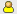
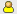
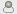
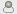

Vise poster og kontakte personer
Flere værktøjer i Novell Teaming (f.eks. mappelister og søgeresultater) viser en oversigt over postoplysninger. Med oplysningerne i denne oversigt kan du vise posten eller kontakte postens forfatter som beskrevet i de følgende afsnit.
Vise poster
Du skal blot klikke på titlen på en post for at vise den.
Du kan konfigurere, hvordan Teaming viser poster. Når du åbner en post, kan Teaming vise posten som en overlejring, på en ny side eller i et pop op-vindue.
Sådan ændres, hvordan poster vises i Teaming:
-
Klik på i afsnittet i hovedsidepanelet.
-
Vælg, hvordan du vil have vist posterne.
Kontakte personer
Postoversigten indeholder ikonet placeret ud for forfatterens navn. Dette tilstedeværelsesikon har følgende statusmuligheder:
 
 

-
Grøn: Personen er online og aktiv.
-
Gul: Personen var aktiv for nylig, men er nu væk.
-
Grå: Personen er ikke logget på Novell-konferenceklienten.
-
Hvid: Personens status er ukendt.
Klik på ikonet , og vælg et menupunkt for at kontakte personen. Du kan starte et onlinemøde eller planlægge at mødes med personen, ringe til personen, føje personen til din udklipsholder eller se personens mikroblog.